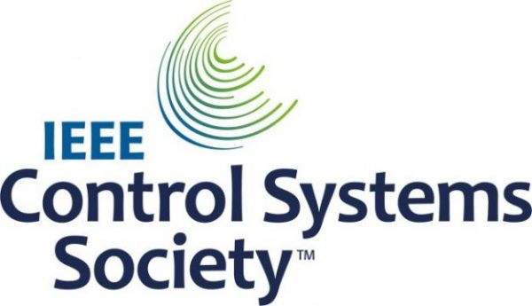
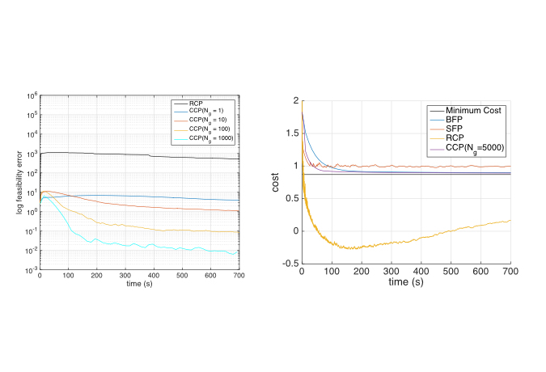
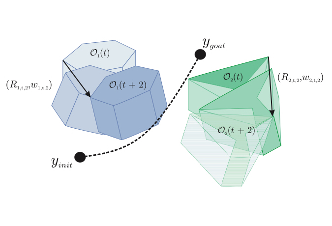

Appointed as an Associate Editor of IEEE CSS CEB
Insoon Yang has been appointed as an associate editor of the IEEE Control Systems Society (CSS) Conference Editorial Board (CEB).

CDC (2 papers): Stochastic Subgradient Methods for DP & Robustness of Reinforcement Learning-Based Controllers
Two papers have been accepted to the 2019 IEEE Conference on Decision and Control (CDC): Stochastic subgradient methods for dynamic programming in continuous state and action spaces. Sunho Jang, and Insoon Yang. Abstract: In this paper, ...

RA-L & IROS: Risk-Aware Motion Planning and Control Using CVaR-Constrained Optimization
The paper “ Risk-Aware Motion Planning and Control Using CVaR-Constrained Optimization “, authored by Astghik Hakobyan, Gyeong Chan Kim, and Insoon Yang, has been accepted to the IEEE Robotics and Automation Letters (RA-L) and the 2019 ...
Submodularity of storage placement optimization in power networks
Submodularity of storage placement optimization in power networks. Junjie Qin , Insoon Yang, and Ram Rajagopal. IEEE Transactions on Automatic Control, vol. 64, no. 8, pp. 3268-3283, 2019.
Stochastic subgradient methods for dynamic programming in continuous state and action spaces
Stochastic subgradient methods for dynamic programming in continuous state and action spaces. Sunho Jang, and Insoon Yang. Proceedings of the 58th IEEE Conference on Decision and Control (CDC), pp. 7287-7293, 2019.